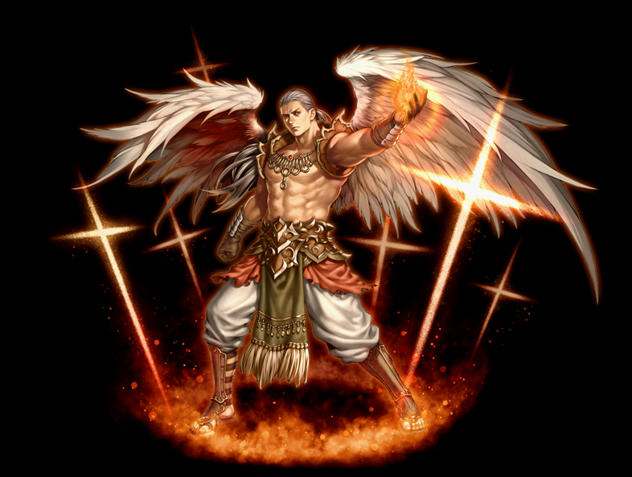
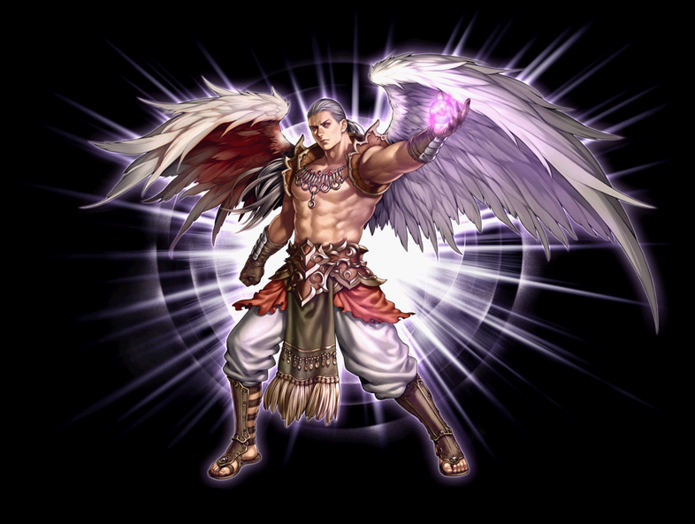

2012～ 追放天使 覚醒スキル一覧
2018/09/03 追放天使スキル改変前のデータ。
改変後は、2018/09/03バランスパッチ反映版を参考にしてください。
ホーリーミッショナリー
セイントパニッシャー
スピリットガイド
ホーリーミッショナリー
| ホーリーミッショナリー | |||||||
|---|---|---|---|---|---|---|---|
 |
|||||||
| [専用パッシブ] 弱点把握 | |||||||
| スキル説明 |
ゴスペルキリグマの憑依バフ発生時に、同じスキル使用するとダメージ上昇。違うスキルを使用すると新たに弱点把握が必要。 |
||||||
| スキル効果 |
憑依バフ適用中、同じスキルを使うとダメージ増加 (ゴスペルキリグマを使用後10秒以内に再度使用すると、2回目の攻撃ダメージが100％増加。) |
||||||
| [専用覚醒スキル] ゴスペルキリグマ | ||||||||
|---|---|---|---|---|---|---|---|---|
| スキル難易度 | 3 | |||||||
| 必要スキル | エバンジェリズム[50] |
|||||||
| スキル説明 | 敵を伝道して味方にすると同時に、敵の信心を吸収し、自分の能力を強化する。敵のタイプによって効果が異なりアンデッド系、悪魔系にも使用可能。 | |||||||
| レベル | 0 | 1 | 2 | 3 | 4 | 5 | ... | 50 |
| 消費CP | 130 | 132 | 134 | 136 | 138 | 140 | ... | 230 |
| 獲得CP | 0 | 0 | 0 | 0 | 0 | 0 | ... | 0 |
| 敵誘惑の成功率（Max 50％） | 40 | 40.4 | 40.8 | 41.2 | 41.6 | 42 | ... | 50 |
| 敵誘惑持続時間[追加] | 130 | 132 | 134 | 136 | 138 | 140 | ... | 230 |
| 敵誘惑制限レベル | モンスターのレベルが（キャラクター+スキルレベル* 0.5）以下の場合にのみ適用 | |||||||
| バフ持続時間 | 30分 | |||||||
| バフ増加数値 | 各ステータスが10％上昇 | |||||||
| 備考 | 誘惑した敵の系統により30分間、各ステータスが10％上昇。 アンデッド：カリスマ / 動物：敏捷 / 神獣：知恵 / 悪魔：力 / 人間：健康 / |
|||||||
| ホーリーフェザーニードル | ||||||||
|---|---|---|---|---|---|---|---|---|
| スキル難易度 | 2 | |||||||
| 必要スキル | フェザーニードル[50] |
|||||||
| スキル説明 |
聖なる力が込められた翼の大きい羽を飛ばして攻撃する。攻撃された敵は命中率と回避率が低下する。 従来より攻撃範囲が増加。 |
|||||||
| レベル | 0 | 1 | 2 | 3 | 4 | 5 | ... | 50 |
| 消費CP | 55 | 56 | 57 | 58 | 59 | 60 | ... | 105 |
| 獲得CP | 71 | 72.3 | 73.6 | 74.9 | 76.2 | 77.5 | ... | 136 |
| 物理ダメージ（％） | 150 | 153 | 156 | 159 | 162 | 165 | ... | 300 |
| 光属性攻撃力 | 16〜18 | 17〜19 | 17〜19 | 17〜19 | 18〜20 | 18〜20 | ... | 41～43 |
| 命中率補正値（％） | 9 | 9.18 | 9.36 | 9.54 | 9.72 | 10.8 | ... | 18 |
| 敵命中/回避低下の時間 | 27 | 27.5 | 28 | 28.5 | 29 | 29.5 | ... | 52 |
| 敵命中低下数値（％） | 5% | |||||||
| 敵回避低下数値（％） | 5% | |||||||
| 打撃の範囲の角度 | 210° | |||||||
| 備考 | 扇形に展開 | |||||||
| リペントプレシング | ||||||||
|---|---|---|---|---|---|---|---|---|
| スキル難易度 | 2 | |||||||
| 必要スキル | ヘブンリープレシング[50] |
|||||||
| スキル説明 | 巨大な天上界のハンマーを召喚して、敵の頭上に落とす。敵はハンマーの衝撃でしばらく麻痺状態になる。さらに攻撃された敵は一定時間レベルが低下して攻撃が楽になる。 | |||||||
| レベル | 0 | 1 | 2 | 3 | 4 | 5 | ... | 50 |
| 消費CP | 72 | 73.2 | 74.4 | 75.6 | 76.8 | 78 | ... | 132 |
| 獲得CP | 92 | 93.8 | 95.6 | 97.4 | 99.2 | 101 | ... | 182 |
| 物理ダメージ（％） | 210 | 214 | 218 | 222 | 226 | 230 | ... | 410 |
| 命中率補正値（％） | 7.5 | 7.65 | 7.8 | 7.95 | 8.1 | 8.25 | ... | 15 |
| 敵麻痺確率（％） | 50 | 50.4 | 50.8 | 51.2 | 51.6 | 52 | ... | 70 |
| 敵麻痺時間 | 0.5秒 | |||||||
| 敵のレベルの低下の最大値 | 51 | 52 | 53 | 54 | 55 | 56 | ... | 101 |
| 敵のレベルの低下数値(1回あたり） | 1 | |||||||
| Ｌｖ低下確率(%) | 90% | |||||||
| 敵のレベルの低下持続時間 | 60秒 | |||||||
| 備考 | 2発とも範囲攻撃。 命中時に与えるダメージ 100％追加。 |
|||||||
セイントパニッシャー
| セイントパニッシャー | |||||||
|---|---|---|---|---|---|---|---|
|  | |||||||
| [専用パッシブ] 双翼の光 | |||||||
| スキル説明 |
折れた翼の力を取り戻し、光属性魔法の限界ダメージを増加させる。 |
||||||
| スキル効果 |
光属性スキルの限界ダメージ10000増加 |
||||||
| [専用覚醒スキル] ドゥームズデイ | ||||||||
|---|---|---|---|---|---|---|---|---|
| スキル難易度 | 5 | |||||||
| 必要スキル | ジャッジメントデイ[50] |
|||||||
| スキル説明 | 光の球体を召喚し、一定範囲内の全ての敵を攻撃する稲妻を落とす。周囲のパーティーメンバーは全ての状態異常が回復する。 | |||||||
| レベル | 0 | 1 | 2 | 3 | 4 | 5 | ... | 50 |
| 消費CP | 400 | 406 | 412 | 418 | 424 | 430 | ... | 700 |
| 獲得CP | 0 | 0 | 0 | 0 | 0 | 0 | ... | 0 |
| 光属性攻撃力 | 1〜701 | 1〜715 | 1〜729 | 1〜743 | 1〜757 | 1〜771 | ... | 1～1401 |
| 有効範囲半径（m） | 3.5 | 3.52 | 3.54 | 3.56 | 3.58 | 3.6 | ... | 4.5 |
| パーティーメンバーの状態 | すべての状態異常の治療 | |||||||
| クールタイム | 5秒 | |||||||
| 備考 | 基本攻撃1打+追加落雷攻撃3打(光ダメージ) | |||||||
| 備考 | 段階別ダメージ適用[90%～150%](20%刻み) | |||||||
| サブミッションアンホーリー | ||||||||
|---|---|---|---|---|---|---|---|---|
| スキル難易度 | 3 | |||||||
| 必要スキル | デストロイングアンホーリー[50] |
|||||||
| スキル説明 | 自分の周囲一定半径内のアンデッド、悪魔系の敵を神聖な力で屈服させる。相対的に弱いアンデッド、悪魔たちは逃げ出すかマヒを受け、一部の邪悪な敵は光によってダメージを受け、移動速度低下。 | |||||||
| レベル | 0 | 1 | 2 | 3 | 4 | 5 | ... | 50 |
| 必要CP | 80 | 81 | 82 | 83 | 84 | 85 | … | 130 |
| 獲得CP | 15 | 15.3 | 15.6 | 15.9 | 16.2 | 16.5 | … | 30 |
| 適用の有効半径（m） | 4 | |||||||
| アンデッド・悪魔逃亡確率 | 90% | |||||||
| 逃亡制限レベル | モンスターのレベルが（キャラクターレベル+スキルレベル - 10）以下の場合にのみ適用 | |||||||
| アンデッド・悪魔麻痺確率 | 70% | |||||||
| 麻痺制限レベル | モンスターのレベルが（キャラクターレベル+スキルレベル - 20）以下の場合にのみ適用 | |||||||
| アンデッド・悪魔光ダメージ確率 | 35% | |||||||
| 光ダメージ制限レベル | モンスターのレベルが（キャラクターレベル+スキルレベル - 40）以下の場合にのみ適用 | |||||||
| 光属性攻撃力 | 1~76.32 | 1~77.82 | 1~79.33 | 1~80.83 | 1~82.34 | 1~83.84 | … | 1～151.32 |
| 備考 | 発動周期が半減し、移動速度低下が追加。（周期速度は武器速度依存） | |||||||
| 備考 | 段階別ダメージ適用[85%～130%](15%刻み) | |||||||
| 備考 | アクティブ(ON/OFF)スキル | |||||||
| マジックエクスペリング | ||||||||
|---|---|---|---|---|---|---|---|---|
| スキル難易度 | 3 | |||||||
| 必要スキル | マジックディスペリング [50] |
|||||||
| スキル説明 | 聖霊を宿し、敵にかけられた各種補助魔法を解除する。解除に成功すると、一定確率で決められた時間の間、光属性攻撃力増加。 | |||||||
| レベル | 0 | 1 | 2 | 3 | 4 | 5 | ... | 50 |
| 消費CP | 65 | 66 | 67 | 68 | 69 | 70 | … | 115 |
| 獲得CP | 0 | 0 | 0 | 0 | 0 | 0 | … | 0 |
| 魔法解除確率（％） | 100 | 100 | 100 | 100 | 100 | 100 | … | 100 |
| 敵CP減少 | 260 | 265 | 270 | 275 | 280 | 285 | … | 560 |
| 光属性攻撃力増加量 | 30% | |||||||
スピリットガイド
| スピリットガイド | |||||||
|---|---|---|---|---|---|---|---|
|  | |||||||
| [専用パッシブ] 天上の祝福 | |||||||
| スキル説明 |
天上からの祝福により基本移動速度増加。 |
||||||
| スキル効果 | 移動速度20％増加 | ||||||
| [専用覚醒スキル] セイントウェイ | ||||||||
|---|---|---|---|---|---|---|---|---|
| スキル難易度 | 5 | |||||||
| 必要スキル | タウンポータル[50] |
|||||||
| スキル説明 | 両方向で移動できる二つの光のゲートを開く。同じフィールド内でのみ移動可能。 | |||||||
| レベル | 0 | 1 | 2 | 3 | 4 | 5 | ... | 50 |
| 消費CP | 650 | 653 | 656 | 659 | 662 | 665 | ... | 800 |
| 獲得CP | 600 | 612 | 624 | 636 | 648 | 660 | ... | 1200 |
| キャスティング速度（秒） | 1 | |||||||
| ポータル持続時間（秒） | 54 | 55 | 56 | 57 | 58 | 59 | ... | 104 |
| 最大生成可能数 | 2 | |||||||
| 備考 | 町へのポータル機能は削除され、同マップ内に作成した2つのポータル間での移動が可能。 | |||||||
| ホーリースピリッツ | ||||||||
|---|---|---|---|---|---|---|---|---|
| スキル難易度 | 2 | |||||||
| 必要スキル | サンクチュアリ[50]
|
|||||||
| スキル説明 | 敵の全ての攻撃から自分を保護してくれる絶対的な防御膜を形成する。持続時間中は魂の状態となり、自由に移動可能。持続時間内にスキルを再度使用すると、肉体が魂がある場所に移動、スキルを使用しないと魂が元の位置に強制移動。 | |||||||
| レベル | 0 | 1 | 2 | 3 | 4 | 5 | ... | 50 |
| 消費CP | 65 | 66 | 67 | 68 | 69 | 70 | ... | 115 |
| 獲得CP | 0 | 0 | 0 | 0 | 0 | 0 | ... | 0 |
| 持続時間（秒） | 40 | 40.5 | 41 | 41.5 | 42 | 42.5 | ... | 60 |
| クールタイム（秒） | 10 | 10 | 10 | 10 | 10 | 10 | ... | 10 |
| 備考 | スキル使用中に走ることが可能。 | |||||||
| トランスポーテーション | ||||||||
|---|---|---|---|---|---|---|---|---|
| スキル難易度 | 3 | |||||||
| 必要スキル | エバキュエイション[50]
|
|||||||
| スキル説明 | 自分とパーティーメンバーを共に近くの安全な町に移動する。 | |||||||
| レベル | 0 | 1 | 2 | 3 | 4 | 5 | ... | 50 |
| 消費CP | 175 | 175.5 | 176 | 176.5 | 177 | 177.5 | ... | 200 |
| 獲得CP | 175 | 178.5 | 182 | 185.5 | 189 | 192.5 | ... | 350 |
| キャスティング速度（秒） | 1 | |||||||
| 成功確率（％） | 100 | 100 | 100 | 100 | 100 | 100 | ... | 100 |
| 備考 | 同マップの一定範囲内にいるパーティーメンバーは、確認画面で「はい」を選択すると一緒に町へ移動。 | |||||||